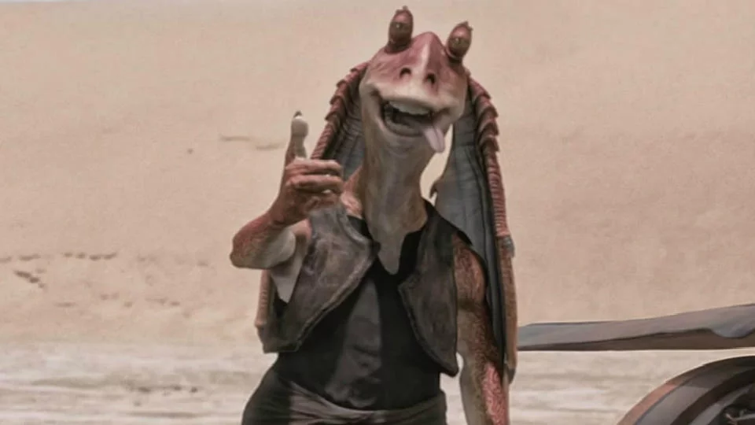
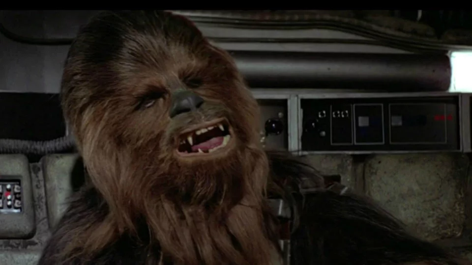
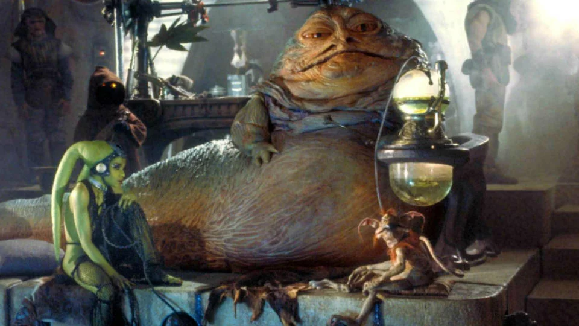

JAR JAR BINKS

Appartenant à la race des Gungan, il est sans doute le personnage le plus maladroit (grotesque pour certains) de la saga Star Wars. Il est sauvé par Qi-Gon Jinn et Obi-Wan Kenobi, et se joint ensuite à eux pour participer à la bataille visant à défendre sa planète, Naboo. Jar Jar devient par la suite le représentant au Sénat de la reine Padmé Amidala.
haut de la page
CHEWBACCA

Ce Wookie est le fidèle compagnon et le co-pilote d'Han Solo. Colérique et vaillant guerrier, il est doté d'une force herculéenne. Cette boule de poils géante est également connue pour son langage limité, à base d'hurlements bestiaux.
haut de la page
JABBA LE HUTT

Cette grosse limace sadique est un parrain de la pègre intergalactique. Il fait notamment geler Han Solo dans une prison de carbonite et capture Leia qu'il transforme en sa servante. Mais Luke vient ensuite les libérer, et la princesse se fait vengeance en étranglant Jabba
haut de la page